地政学
マラッカは海峡の狭い航路をにらむ港町です。王国、欧州勢力、海賊対策、通商、華人移民、現代の物流が重なり、都市の小ささに対して世界史上の重みは大きいです。海の安全保障も見える街です。地域政治も映します。

🇲🇾 マレーシア / マラッカ州 / World City Atlas
マラッカ海峡の交易路で、マレー、華人、プラナカン、ポルトガル、オランダ、英国の層が旧市街、川辺、港湾、食文化、信仰に残る世界遺産都市です。
都市の骨格
マラッカは巨大金融都市ではありませんが、東西交易、植民地支配、多民族社会、観光化、製造業の郊外展開を一つの小さな市街で読めます。川辺の景観と住宅地の生活を分けずに見ることが重要です。
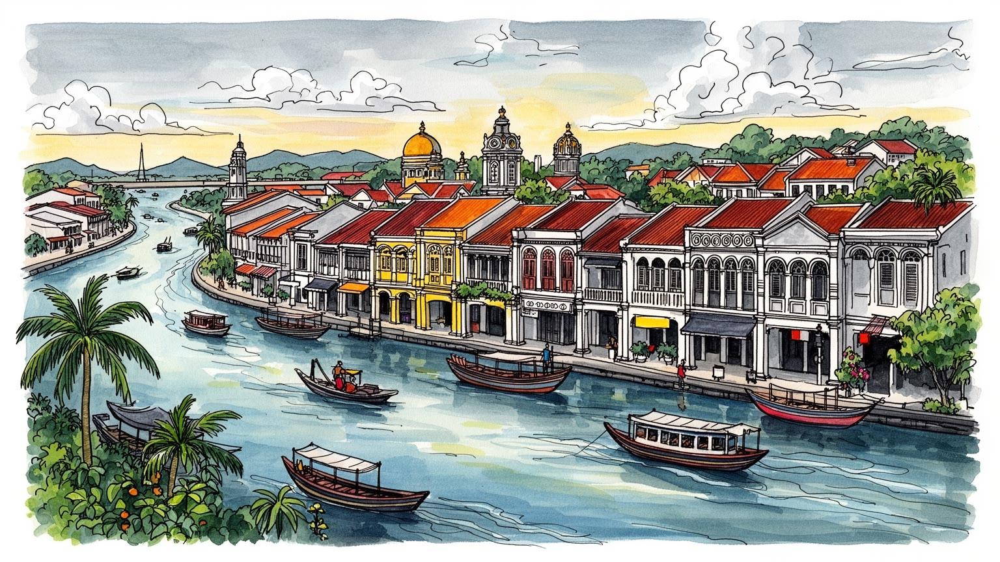
マラッカは海峡の狭い航路をにらむ港町です。王国、欧州勢力、海賊対策、通商、華人移民、現代の物流が重なり、都市の小ささに対して世界史上の重みは大きいです。海の安全保障も見える街です。地域政治も映します。
観光だけでなく、州内の製造業、電子、機械、食品、港湾関連、商業が雇用を作ります。旧市街の接客労働と郊外工業地帯の通勤が並び、世界遺産の街にも普通の産業都市の顔があります。週末需要と工場勤務が同居します。
マレー、華人、インド系、プラナカン、ポルトガル系の記憶が、料理、言語、墓地、寺院、教会、モスク、家族儀礼に残ります。文化は展示物ではなく、日々の食卓と祈りで更新されます。祝祭の暦も街を動かします。
旅行者は川辺、赤い広場、砦跡、夜市、ニョニャ料理へ向かいます。住民には渋滞、住宅価格、雨、暑さ、駐車、学校、医療、観光客との距離があり、名所のそばで生活が営まれます。週末と平日の差も大きい都市です。
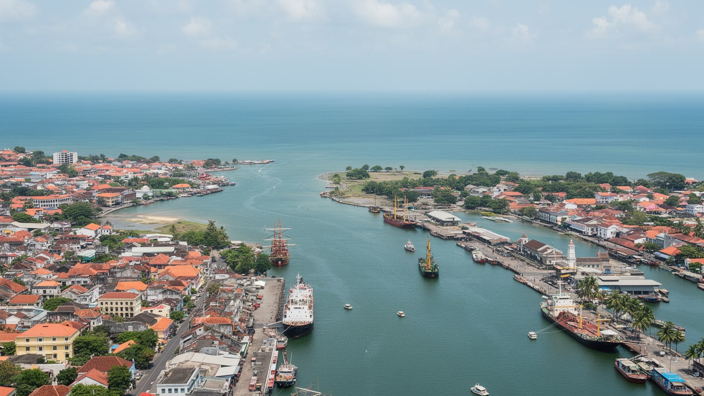
マラッカを理解する入口は、川辺の旧市街だけでなく、マラッカ海峡そのものの狭さにあります。インド洋と南シナ海を結ぶ航路は、古くから香辛料、陶磁器、布、銀、人、宗教、情報を運び、港町の繁栄と危険を同時に作ってきました。海峡は開かれた道である一方、船が集中する場所であり、海賊、軍事、通商管理、植民地支配の対象にもなりました。マラッカ王国が勢力を広げ、ポルトガル、オランダ、英国がここを求めた理由は、都市の規模ではなく、航路を押さえる位置にありました。現在の大型物流の中心はシンガポールやクラン港へ移ったが、マラッカの街には海峡をめぐる記憶が濃く残ります。川は市街を貫き、河口は海へ開き、古い商館や倉庫、宗教施設、墓地、ショップハウスが移動の痕跡を示します。観光客が川沿いを歩く時、見ているのは美しい水辺だけではありません。そこには、船の補給、税、移民の到着、商人の信用、通訳、混血社会、警備の歴史が折り込まれています。海峡は都市を外へ開くが、同時に外部の支配も呼び込みます。マラッカの地理は、港町が世界に接続されることの豊かさと危うさを一緒に見せます。今も周辺の道路、工業地、観光施設は海峡と高速交通に依存し、街の経済は水際の記憶を商品にしながら内陸の生活圏へ広がっています。小さな川幅と広い海の差を意識すると、この都市がなぜ世界史の交差点になったのかがよく分かります。
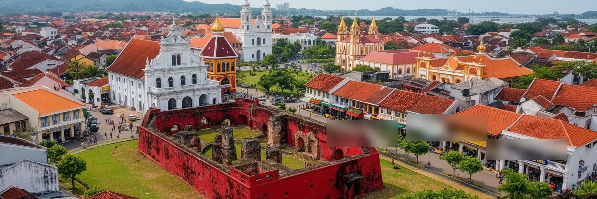
マラッカの旧市街では、ポルトガル、オランダ、英国の痕跡が、観光写真の背景としてだけでなく、支配の交代を示す都市の層として残っています。赤い建物が目を引くオランダ広場、セントポールの丘、サンチャゴ砦の門、教会、墓石、行政施設は、それぞれ異なる権力が港を管理し、信仰を広げ、商取引を統制した時代を語ります。ですが植民地の記憶は、欧州建築の保存だけで終わりません。支配者が変わるたびに、税、土地、宗教、軍事、労働、言語、商人のネットワークも変わり、マレー人、華人、インド系住民、混血共同体の生活に影響しました。現在の世界遺産地区は歩きやすく整備されていますが、そこに残る建物は権力の美しい装飾ではなく、海峡の利益をめぐる競争の結果でもあります。保存された街並みは都市の誇りと観光収入を生む一方、歴史を単純な異国情緒に変えてしまう危険もあります。マラッカを歩く時は、赤い壁や石の門の前で、誰が建て、誰が働き、誰が追い出され、誰が交易を続けたのかを考えたいです。植民地建築は過去の支配を固定するものではなく、現在の住民がそれをどう説明し、商い、教育し、時には距離を取るかによって意味を変えます。観光客の写真の背後には、保存費用、交通規制、店舗賃料、宗教施設の維持、地域住民の生活動線があります。マラッカの植民地層は、世界史の教材であると同時に、日々使われる都市空間でもあります。
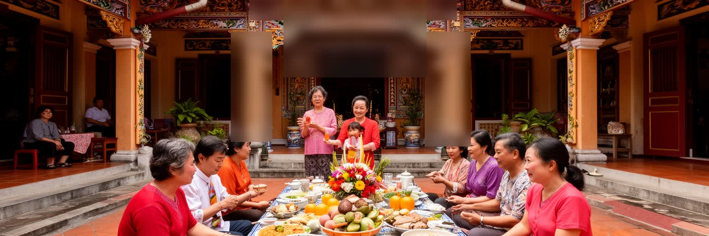
マラッカの魅力を支える重要な層が、プラナカン、あるいはババ・ニョニャの文化です。中国系移民とマレー世界、植民地都市の制度、地域の食材、家族儀礼が重なり、言葉、衣装、家屋、婚礼、祖先祭祀、料理、装飾に独自の形が生まれました。ニョニャ料理は観光客にとって分かりやすい入口ですが、その背後には女性の家事労働、家族の記憶、交易品の香辛料、宗教的な節目、商人の移動があります。ショップハウスの奥行き、風を通す中庭、タイル、木彫、台所、祭壇は、熱帯の気候と商業都市の暮らしに合わせた住まいの知恵でもあります。プラナカン文化は美しい装飾として消費されやすいですが、実際には多言語社会の交渉と階層差の中で作られてきました。誰が家を継ぎ、誰が料理を覚え、誰が外で商売し、誰が家庭の儀礼を支えたのかを見ないと、文化は表面だけになります。現在では博物館、レストラン、土産物、宿泊施設がこの文化を見せますが、保存と商品化の間には緊張があります。マラッカのプラナカン文化は、民族を固定した箱ではなく、海峡を行き交う人びとが、近隣の言葉と味と信仰を取り込みながら作った生活の技術です。街を歩くと、祈りの場、食卓、家具、服飾、家族写真が、交易都市の歴史をとても近い距離で語り始めます。混ざることは曖昧さではなく、気候、商売、結婚、信仰に合わせて生きるための具体的な選択でした。
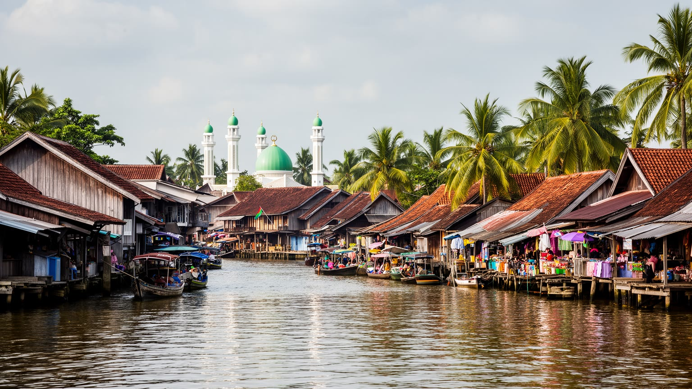
マラッカは世界遺産の旧市街で知られるが、都市を支える生活は観光地区の外にも広がっています。マレーの村、住宅地、学校、モスク、市場、川沿いの小さな店、郊外の工業団地、幹線道路沿いの商業施設が、州都としての日常を形作ります。観光客が見る赤い広場やショップハウスは都市の重要な顔ですが、住民にとっては通勤、通学、買い物、礼拝、親族訪問、医療、行政手続きが同じくらい大切です。木造家屋やカンポンの配置には、熱帯の雨、風、日射、家族関係、近所付き合いに対応する知恵が残ります。一方で、道路拡張、宅地開発、自動車依存、若者の職業選択は、昔ながらの生活圏を変えています。世界遺産の保護は中心部に強い光を当てるが、マラッカの社会を理解するには、保存地区の外で暮らす人びとの時間も見なければなりません。モスクの礼拝時間、市場の朝、学校帰りの交通、雨季の排水、祝祭日の帰省は、観光地とは違うリズムで街を動かします。マレー人の歴史は王国の栄光として語られがちですが、現代のマラッカでは住宅ローン、雇用、教育、宗教行事、地域政治として続いています。旧市街の華やかさと郊外の暮らしを結びつけると、マラッカは過去の交易都市ではなく、民族、宗教、階層、移動が今も交渉される州都として見えてきます。川辺の観光船から少し離れた生活道路に、都市の本当の厚みがあります。
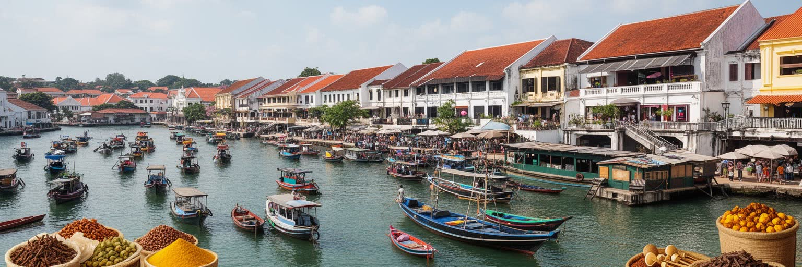
現代のマラッカは、世界最大級の港湾都市ではありません。コンテナ物流の主役は周辺の巨大港へ移り、旧市街の水辺は観光と景観の比重を増しました。それでも港の記憶は、都市経済の深い場所に残っています。香辛料、錫、陶磁器、布、米、奴隷、宗教者、商人、通訳、船大工、荷役労働者が集まった歴史は、現在のショップハウス、倉庫、河口、地名、料理、家族史に刻まれています。交易は単に物を運ぶだけでなく、信用、結婚、言語、法、税、暴力、祈りを運びました。マラッカの商業文化は、その複雑な移動の上に築かれています。現在の州経済では製造業や観光が大きな役割を持ち、工業団地では電子、機械、食品、部品、物流関連の仕事があります。港町の性格は、古い帆船から近代的なサプライチェーンへ姿を変えたと言えます。観光地区の土産物店や飲食店も、広い意味では海峡の商業都市としての伝統を引き継ぎますが、商品化された歴史だけでは労働の現実を捉えられません。仕入れ、輸送、在庫、価格交渉、家族経営、外国人労働者、オンライン予約が、今の商いを支えています。マラッカの港湾性を読むには、古い砦と同じくらい、工場への通勤道路、卸売市場、観光バスの駐車場、飲食店の厨房を見る必要があります。港は消えたのではなく、都市の産業構造と記憶の中で形を変えて残っています。海峡を見れば、過去の帆船だけでなく、燃料、部品、食品、人の流れが今も続くことを想像できます。
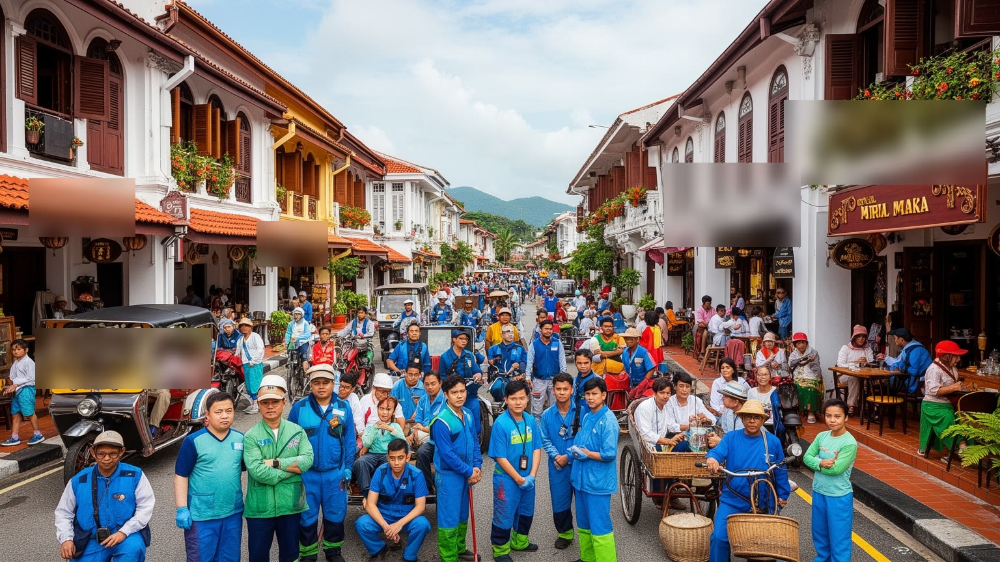
マラッカの世界遺産地区は、週末や休暇に大きく膨らみます。川沿いの散策、赤い広場、ジョンカー通り、博物館、飲食店、宿泊施設、三輪車、土産物店、写真スポットが旅行者を引き寄せます。ですが観光の賑わいは、表の華やかさだけでなく、多くの働く時間によって支えられています。ホテルの清掃、厨房、配膳、警備、交通誘導、ガイド、チケット販売、夜市の設営、ゴミ処理、トイレ管理、音響、仕入れ、SNS対応は、都市の印象を左右する重要な仕事です。観光収入は地域に利益をもたらしますが、混雑、騒音、駐車不足、家賃上昇、短期宿泊の増加、生活用品店の減少を招くこともあります。旧市街に住む人にとって、世界遺産であることは誇りであると同時に、日常の制約でもあります。雨が降れば客足は変わり、暑さが強ければ働く人の負担は増え、週末と平日の収入差は家計を揺らします。観光を持続させるには、建物をきれいに保存するだけでなく、そこで働く人と住む人の生活を守る必要があります。マラッカの観光労働は、多民族の接客文化を見せる舞台であり、同時に賃金、労働時間、家族経営、外国人労働者、若者の進路の論点でもあります。地元メディアやSNSは、渋滞、催し、屋台、スポーツ行事の情報を日常の言葉でつなぎます。旅行者が短い滞在で楽しむ街の裏側には、早朝から深夜まで続く準備と片付けがあります。観光都市としての成熟は、客数の多さではなく、その労働が尊重され、住民の生活時間と両立できるかで測られます。
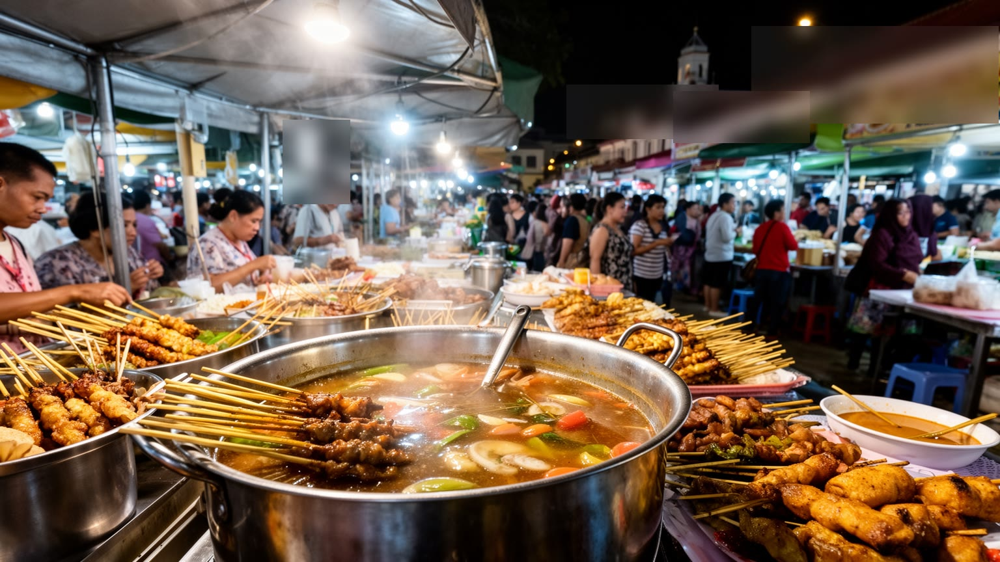
マラッカの食は、都市を読むためのとても有効な入口です。ニョニャ料理、チキンライスボール、サテー・チュロップ、ラクサ、菓子、海産物、コーヒー店の朝食、夜市の屋台には、マレー、華人、インド系、ポルトガル系、交易品の香辛料、家庭料理、観光化が混ざっています。料理は民族文化の名札として語られやすいですが、実際には市場の仕入れ、家庭の記憶、宗教上の食のルール、店の価格設定、観光客の期待、働く人の技術が重なって成り立ちます。プラナカン料理の複雑な味は、家庭の台所で受け継がれてきた時間を示す一方、レストランのメニューとして標準化されることで新しい意味を持ちます。夜市では、地元の買い物と観光客向けの商品が同じ通りに並び、匂い、音、行列、雨、暑さが都市の感覚を作ります。食文化は魅力的ですが、衛生、廃棄物、価格競争、長時間労働、家族の後継者不足も伴います。マラッカの市場を歩くと、海峡交易の大きな歴史が、香辛料、調味料、果物、魚、菓子、陶器、食器という小さな物に分解されて日常化していることが分かります。食べることは観光体験であると同時に、住民の暮らしの基本であり、宗教や家族の境界を意識させる場でもあります。マラッカの味は、異文化が平和に混ざったという単純な物語ではなく、移動、労働、家庭、商売、信仰が毎日調整される結果として生まれています。皿の上には、港町の歴史と現在の家計が同時に載っています。
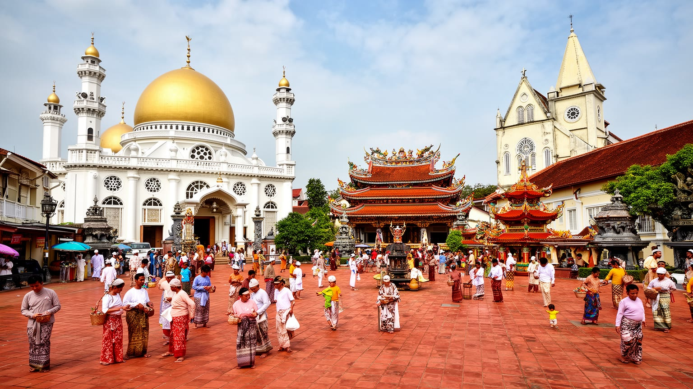
マラッカの街路では、モスク、寺院、教会、祖先祭祀の場が近い距離に並びます。これは単なる多文化の飾りではなく、海峡都市が長い時間をかけて移民、商人、支配者、家族、信仰共同体を受け入れ、時には緊張しながら暮らしてきた結果です。マレー系のイスラム、華人の仏教・道教・祖先祭祀、キリスト教、ヒンドゥー教、ポルトガル系共同体の祭礼は、暦、食、音、衣装、休日、婚礼、葬送、近所付き合いに影響します。観光客は寺院や教会を短時間で巡るが、住民にとって信仰施設は人生の節目、寄付、教育、相談、共同体の記憶を支える場所です。宗教が近くにあるからといって、常に調和だけがあるわけではありません。音、交通、祭礼のルート、土地利用、改修、観光客のマナー、政治の言葉をめぐって調整が必要になります。マラッカの宗教景観の面白さは、違いが消えて一つになることではなく、違いを残したまま同じ街路を使ってきた点にあります。青雲亭や教会、モスクを見比べると、祈りの建物が海峡交易の信用、移民の保護、家族の継承、死者の記憶と結びついていることが分かります。信仰は観光の見どころである前に、都市の社会保障や相互扶助の基盤でもあります。マラッカを読むには、建築様式だけでなく、祭礼の日に誰が準備し、誰が道を空け、誰が食事を配り、誰が次世代へ作法を教えるのかを見る必要があります。祈りは都市の深いインフラです。
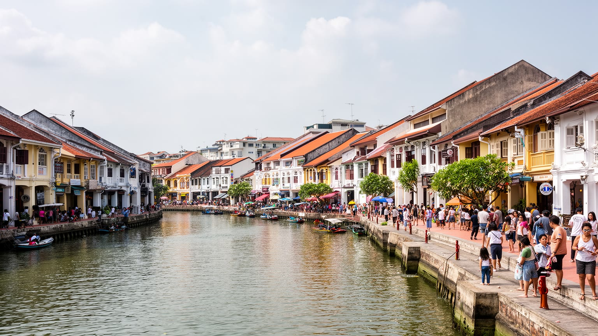
マラッカ川沿いの景観は、都市の魅力を大きく高めています。遊歩道、橋、船、ショップハウス、壁面の色、夜の照明は旅行者に歩く楽しさを与えますが、水辺は同時に住宅、商店、排水、廃棄物、洪水対策、交通、騒音の管理が必要な生活空間でもあります。川はかつて交易と荷役の場であり、現在は観光の軸になりました。役割が変わることで、建物の使い方も変わり、住居がカフェや宿に転じ、家賃や土地価格が上がり、昔からの住民が中心部に残りにくくなることもあります。保存されたショップハウスは美しいですが、熱帯の気候では換気、雨漏り、白蟻、改修費、設備更新が現実の論点になります。世界遺産地区では外観保護と生活の快適さをどう両立するかが問われます。川辺の観光船が増えれば経済効果はありますが、音、波、排気、夜間照明が住民に影響します。水質改善や遊歩道整備は都市の価値を高める一方、誰のための水辺かという問いも生みます。マラッカの住宅問題は巨大都市ほど深刻に見えないかもしれませんが、観光地化した中心部と郊外に広がる住宅地の差は大きいです。若い世代は職場、学校、車、家賃、親族との距離を考え、子どもの遊び場や高齢者の散歩道も見ながら住む場所を選びます。川辺をきれいな散策路として見るだけでなく、そこで暮らし、働き、建物を直し、水と付き合う人の視点を重ねると、マラッカの都市更新の難しさが見えてきます。水辺の美しさは自然に残ったものではなく、毎日の清掃、修繕、規制、商売、近隣関係の積み重ねで保たれています。
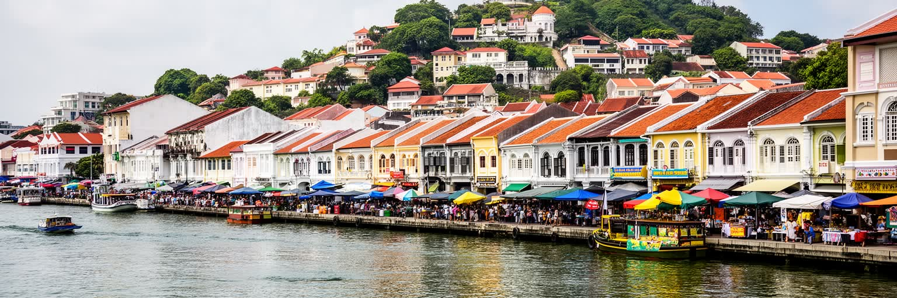
マラッカを読む時、世界遺産の旧市街だけを切り取ると、都市の厚みを見失います。ここには、マラッカ王国の海峡支配、欧州植民地の交代、華人商人とプラナカン文化、マレーの村とイスラムの生活、ポルトガル系共同体、川辺の観光化、郊外の製造業、住宅地の日常が同時にあります。都市の魅力は、異なる文化がきれいに並ぶことだけではなく、交易、支配、結婚、労働、信仰、食、保存、開発が小さな市街で重なり、時には摩擦を起こしながら続いている点にあります。旅行者にとってマラッカは歩きやすい歴史都市ですが、住民にとっては交通渋滞、雨、暑さ、住宅、仕事、学校、宗教行事、観光客との距離を調整する生活の場です。州経済では製造業も重要であり、旧市街のカフェや土産物店だけで都市を説明することはできません。海峡の記憶は、港や砦に残るだけでなく、家庭料理、商店の信用、寺院の寄付、祭礼、工場への通勤、川辺の清掃にも姿を変えています。マラッカの価値は、過去を保存していることと、過去を使って現在の雇用と誇りを作っていることの両方にあります。しかしその力は、中心部を観光商品にしすぎると弱まります。建物、料理、信仰、言語、住宅が生きた生活と結びついている限り、マラッカは単なる歴史テーマパークではなく、海峡世界の記憶を現在の街路で読み直せる都市であり続けます。小さな橋を渡るだけで、世界史と今日の買い物が同じ視界に入ります。